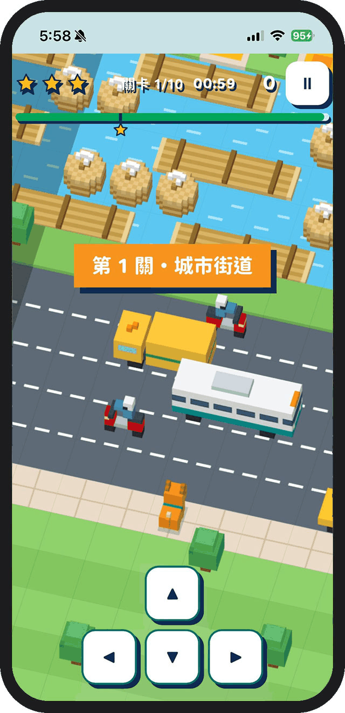
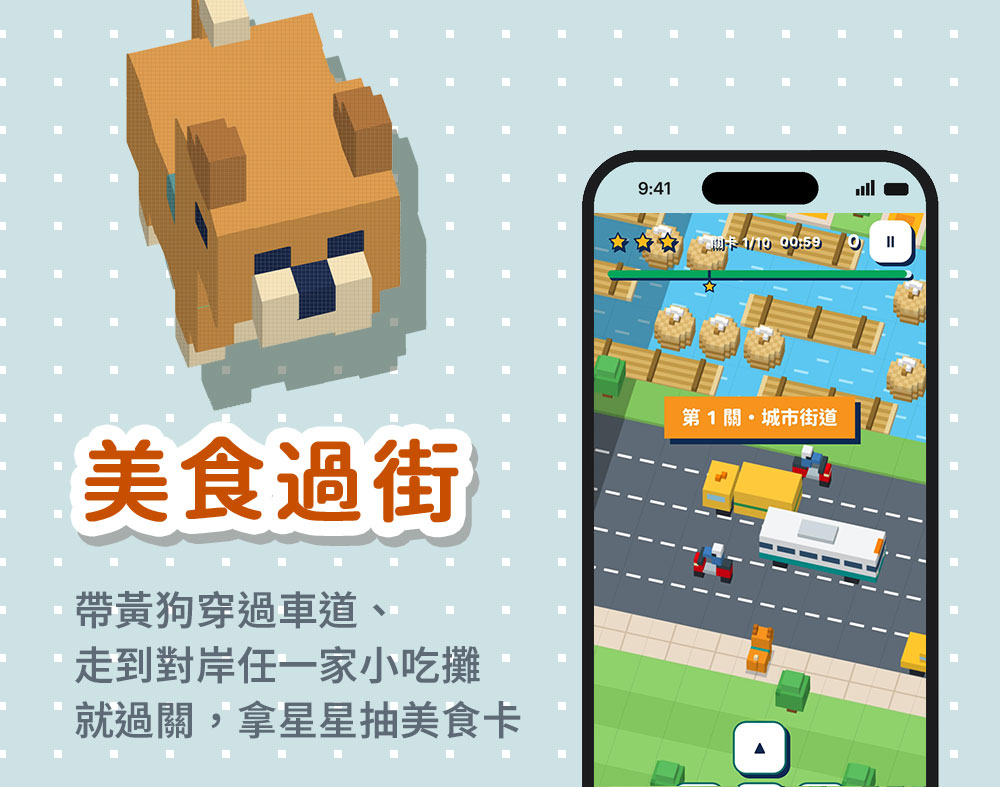
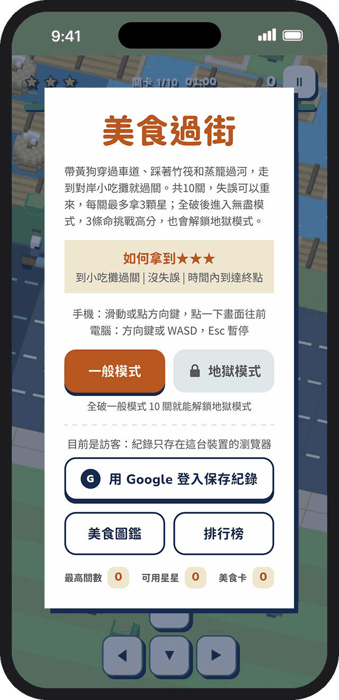
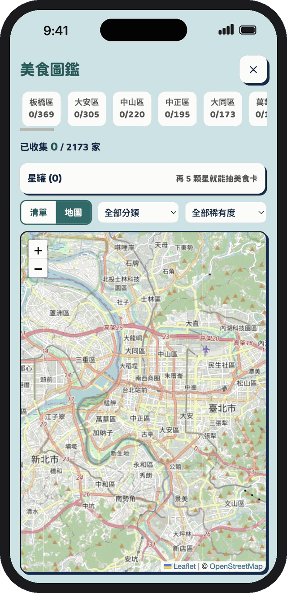

01
閃過車流、跳上竹筏，小吃攤就在對岸
每一關都要先穿過公車、計程車和機車來來往往的車道，再踩著漂流的竹筏和蒸籠過河。共 10 關，失誤可以無限重來；全破後進入無盡模式，3 條命挑戰高分，也會解鎖地獄模式。
10 個關卡
失誤無限重來
無盡模式

帶黃狗穿過車道、踩著竹筏和蒸籠過河，走到對岸任一家小吃攤就過關。打開網頁就能玩，手機、電腦都可以，不用下載也不用註冊。

每一關都要先穿過公車、計程車和機車來來往往的車道，再踩著漂流的竹筏和蒸籠過河。共 10 關，失誤可以無限重來；全破後進入無盡模式，3 條命挑戰高分，也會解鎖地獄模式。

到小吃攤過關、全程沒失誤、在時間內抵達，每關最多拿 3 顆星。不登入也能直接玩；用 Google 登入並設定暱稱，分數就能登上本月與總排行榜，星星和美食卡換手機也不會不見。

過關拿到的星星會存進星罐，每滿 5 顆就能抽一張美食卡。圖鑑收錄雙北超過 2,000 家店，可以依行政區看收集進度，用清單或地圖瀏覽，也能依分類和稀有度篩選。

規格 / SPEC
常見問題 / FAQ